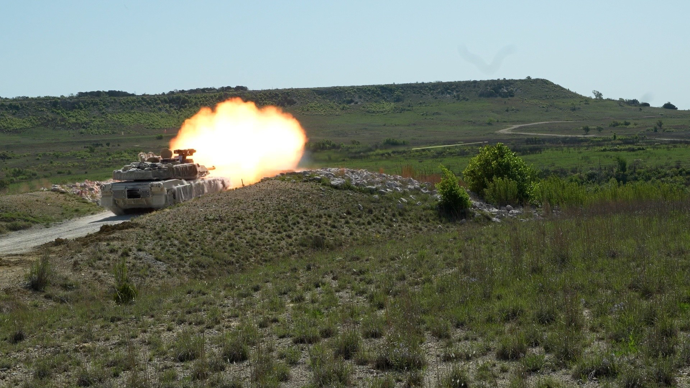
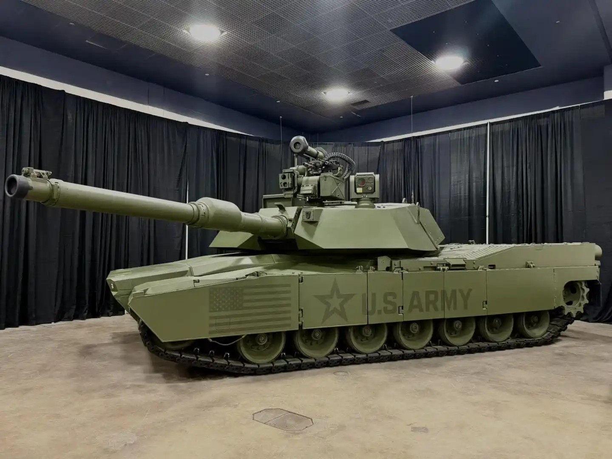

刷到无人机攻击坦克的画面，很容易产生一个疑问：既然空中的小型飞行器能威胁重型装甲，坦克还有必要保留吗？
我的判断是：坦克仍有用途，但它能否完成任务，越来越取决于周围有没有可靠的侦察、防护、步兵和保障力量。单看一辆车有多厚的装甲，已经回答不了这个问题。
无人机的影响包括发现目标、持续观察，以及参与攻击。车辆开到哪里、补给如何送达，都可能更容易被对方发现。即便坦克本身没有被摧毁，行动受限、补给中断，也会影响它继续作战。
英国皇家联合军种研究所研究员杰克·沃特林在2025年10月发表的研究中，讨论了这些压力及部分乌克兰部队的适应方式。需要留意，这是一项关于特定部队和阶段的观察，不能把其中的经验直接套到所有战场。[1]
因此，“无人机威胁很大”有充分理由受到重视。至于“所有坦克都已无用”，还需要看它承担的任务有没有被替代。

【图1】2025年4月10日，美国得克萨斯州卡瓦佐斯堡，M1A2 SEPv3坦克实弹训练。Eric Franklin / U.S. Army。此图为训练资料照。
坦克把人员防护、地面机动与直接火力装在同一平台上。它可以为地面部队提供火力支援，并在一定防护下行动。这里的“一定防护”绝不等于安全保证，坦克也需要其他力量保护。
无人机可以侦察和攻击，却不能独自完成步兵控制、搜索和守住地面的全部工作；坦克同样不能独自完成这些任务。地面作战仍需要不同力量分工配合。
2026年3月，西点军校现代战争研究所网站刊登的两位作者署名文章，就从这种任务互补的角度讨论了坦克与无人机。那是作者的分析意见，不代表美国军方官方立场，也不能当作所有争论已经结束。[2]
继续增加防护，也会带来重量、维护和保障方面的压力。坦克能否到达需要它的地方，损坏后能否维修，和纸面性能一样值得关注。
美国陆军在2023年公布M1E3项目方向时，已经把减轻重量、降低保障负担和集成防护列入考虑。到2026年1月，其官方资料披露了一辆M1E3早期原型的展示，并再次提及无人机等威胁。[3][4]
这说明坦克设计正在调整。它能证明研发方向发生了变化，不能证明某款原型已经解决反无人机难题，更不能证明已完成实战检验。

【图2】2026年1月公开展示的M1E3早期原型。来源：U.S. Army。原型展示照，非实战画面。
与其只比较一次攻击中双方装备的价格，我更愿意问：在某个任务里，取消坦克以后，谁来提供相应的防护、机动和火力？替代方案能做到什么，代价又是什么？
如果只谈保留，却不解决它面临的新威胁，结论会过于乐观。如果只凭受损画面就宣布淘汰，也没有回答地面任务该怎样完成。
坦克的未来仍有争论。至少从上述公开资料看，值得讨论的方向是它怎样与无人机及其他力量配合，以及这种组合是否承担得起，而不是只给一种装备判定输赢。
如果预算有限，你更赞成优先提高坦克本身的性能，还是先补齐反无人机、防空和维修保障？理由是什么？
资料截至2026年11月7日。本文为公开资料解读，观点与装备设计目标均不等同于已验证的实战结论。本文所用美国军方影像不表示该方认可或支持本文观点。
参考资料：
[1] RUSI，Jack Watling，2025-10-23，《Emergent Approaches to Combined Arms Manoeuvre in Ukraine》。
[2] Modern War Institute，Charles S. Oliviero、Phil Halton，2026-03-11，《The Menace of Misunderstanding》。
[3] U.S. Army，2023-09-06，《Army Announces Plans for M1E3 Abrams Tank modernization》。
[4] U.S. Army，2026-01-16，《US Army unveils early Abrams prototype at North American International Auto Show》。
来源链接：The Menace of Misunderstanding: Learning the Wrong Lessons from Ukraine’s Drone-Saturated Battlefields；Emergent Approaches to Combined Arms Manoeuvre in Ukraine；US Army unveils early Abrams prototype at North American International Auto Show；Army Announces Plans for M1E3 Abrams Tank modernization